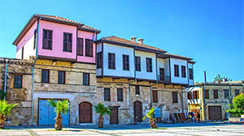

Antalya
Antalya, tarih, doğa ve denizin muhteşem bir buluşmasıdır. Şehir, tarihi dokusuyla ünlü Kaleiçi bölgesinden, mistik güzellikteki Düden Şelalesi'ne kadar birçok gezilecek yere ev sahipliği yapar. Kaleiçi'nde Osmanlı ve Selçuklu dönemlerinden kalma tarihi yapılar ve dar sokaklar sizi geçmişe götürürken, Antalya'nın sembolü olan Hadrian Kapısı da burada bulunur. Antik şehirleri keşfetmek isteyenler için Termessos ve Perge gibi önemli arkeolojik alanlar da ziyaret edilebilir. Ayrıca, doğa harikası Köprülü Kanyon Milli Parkı ve Olimpos Antik Kenti'nin yanı sıra, Kemer'deki Phaselis Antik Kenti de tarih ve doğa tutkunlarını cezbetmektedir. Antalya'nın turkuaz sularıyla ünlü plajları da dinlenmek ve eğlenmek için idealdir. Antalya'yı ziyaret edenler, hem tarihi hem de doğal güzellikleri bir arada deneyimleyerek unutulmaz bir tatil geçirebilirler.
Mersin
Mersin, Akdeniz'in sıcak sularıyla kucaklaşan ve tarihle doğanın iç içe geçtiği bir şehirdir. Silifke Kalesi, tarihi MÖ 3. yüzyıla dayanan ve Silifke'nin simgelerinden biridir. Muhteşem manzarasıyla ziyaretçileri etkilerken, Cennet-Cehennem Mağaraları ise Toros Dağları'nın eteklerinde doğal oluşumlarıyla dikkat çeker. Kızkalesi, Erdemli ilçesindeki tarihi bir kale olup, Akdeniz'in kıyısında konumlanmıştır ve hikayesiyle eşsiz manzarası ziyaretçilerini büyüler. Mersin'in Mezitli ilçesinde bulunan Ancient City of Soli-Pompeipolis ise Helenistik ve Roma dönemlerine ait kalıntılarıyla tarih tutkunlarını cezbeder. Tarsus'un hemen dışında yer alan Tarsus Şelalesi, serin suları ve yeşil çevresiyle huzurlu bir kaçış sunarken, Tarsus'taki Atatürk Evi ve Müzesi, Türkiye'nin kurucusu Mustafa Kemal Atatürk'ün doğduğu evde yer alır ve ziyaretçilere Atatürk'ün yaşamına dair önemli bir izlenim sunar. Mersin, tarihi ve doğal güzellikleriyle zengin bir şehirdir ve bu yerler sadece bu güzelliklerin bir kısmını temsil etmektedir.
- 

Muğla
Muğla, Ege'nin mavisine ve yeşiline sahip bir cennet köşesidir. Şehir, tarihi dokusuyla birlikte doğal güzellikleriyle de ön plana çıkar. Bodrum Kalesi, Antik çağlardan günümüze uzanan bu kale, Bodrum'un simgesidir ve tarih ile deniz manzarasını bir araya getirir. Ölüdeniz, Fethiye ilçesinde bulunan bu doğa harikası lagün, dünyanın en güzel plajları arasında gösterilir ve berrak turkuaz suyuyla ziyaretçilerini etkiler. Dalyan, Muğla'nın doğal güzelliklerinden biri olup, Kral Mezarları ve Caretta Caretta kaplumbağalarıyla ünlüdür. Marmaris Kalesi, Osmanlı döneminden kalma tarihi bir yapı olup, liman manzarası eşliğinde şehrin tarihini ziyaretçilere aktarır. Datça Yarımadası, temiz denizi ve sakin atmosferiyle bilinirken, Knidos Antik Kenti gibi tarihî zenginliklere ev sahipliği yapar. Kaunos Antik Kenti ve Dalyan Nehri, muhteşem doğa manzarasıyla tarih yolculuğu yapmak isteyenleri cezbeder. Muğla, Ege'nin incisi olan bu yerlerle dolu bir şehirdir ve her biri ziyaretçilere unutulmaz bir deneyim sunar.